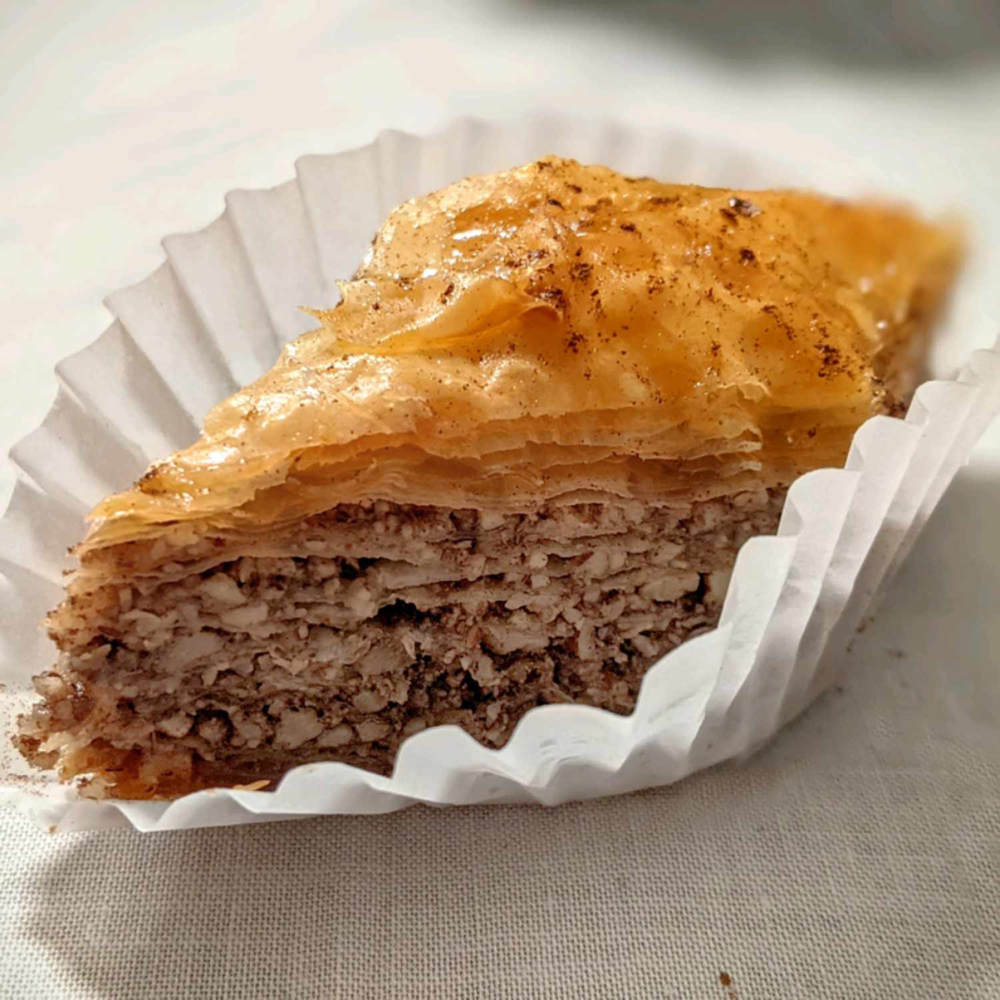

Baklava

Description
Baklava is a sweet pastry made from layers of filo dough filled with chopped nuts and sweetened with syrup or honey. It typically contains walnuts, pistachios, or almonds, mixed with spices like cinnamon. The layers are brushed with butter, baked until golden, and then soaked in sweet syrup, creating a crispy exterior with a tender filling.
Baklava is popular worldwide, especially in Middle Eastern, Mediterranean, and Balkan cuisines. Its origins are often debated, with various cultures claiming it as their own. This treat is commonly served during celebrations and special occasions, making it a favorite dessert enjoyed by many.
Ingredients
- Filo dough
- Chopped nuts (such as walnuts, pistachios, or almonds)
- Butter
- Sugar
- Honey
- Water
- Cinnamon
- Lemon juice (optional)
Steps
- Preheat Oven: Preheat your oven to 350°F (175°C).
- Prepare the Nut Filling: In a bowl, combine chopped nuts, sugar, and cinnamon. Set aside.
- Prepare the Filo Dough: Unroll the filo dough and cover it with a damp cloth to prevent it from drying out.
- Grease the Pan: Brush a 9x13 inch baking dish with melted butter.
- Layer the Filo Dough: Place one sheet of filo dough in the pan, brushing it with melted butter. Repeat this process, layering about 8 sheets, brushing each layer with butter.
- Add Nut Filling: Spread a portion of the nut mixture evenly over the layered filo dough.
- Continue Layering: Add 3 more sheets of filo dough (each brushed with butter) over the nut mixture. Repeat the layering process with the nut mixture and filo until all ingredients are used, finishing with about 8 layers of filo on top.
- Cut the Baklava: Using a sharp knife, cut the assembled baklava into diamond or square shapes.
- Bake: Bake in the preheated oven for 45-50 minutes or until golden brown.
- Prepare the Syrup: While the baklava bakes, combine sugar, water, honey, and lemon juice in a saucepan. Bring to a boil, then reduce heat and simmer for about 10 minutes.
- Pour Syrup: Once the baklava is done baking, remove it from the oven and immediately pour the hot syrup evenly over it. Allow it to cool completely before serving.